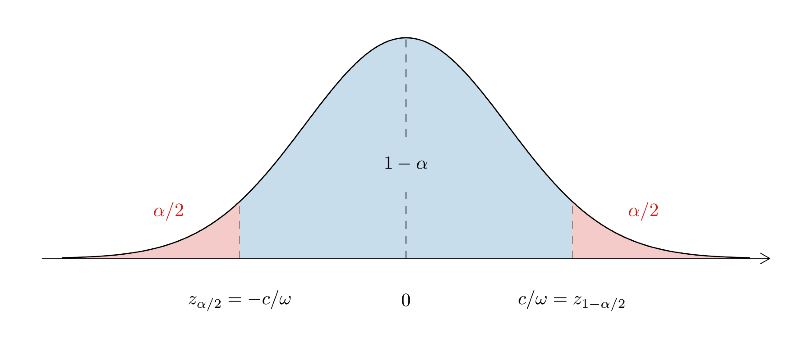
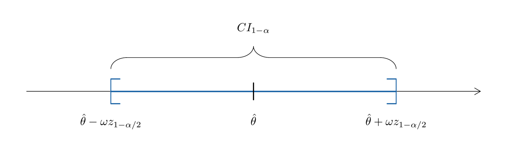
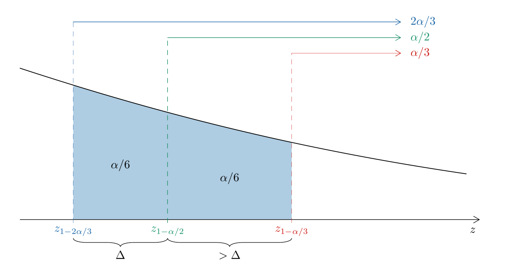

Lecture 4: Confidence intervals
Economics 527: Econometric Methods
Normal estimator
Normal regression model
Assumption 1. Y = X\beta + U for some \beta \in \mathbb{R}^k.
Assumption 2. \mathrm{E}\left[U \mid X\right] = 0.
Assumption 3. For some \sigma^2 > 0: \begin{aligned} \mathrm{Var}\left(U \mid X\right) &= \mathrm{E}\left[UU^\top \mid X\right] \\ &= \sigma^2 I_n \end{aligned}
Assumption 4. \operatorname{rank}\left(X\right) = k.
Assumption 5. U \mid X \sim N\big(\underbrace{0}_{\mathrm{E}\left[U \mid X\right]},\ \underbrace{\sigma^2 I_n}_{\mathrm{Var}\left(U \mid X\right)}\big)
Distribution of \hat\beta
We will use: \begin{aligned} \underset{p\times1}{V} &\sim N\big(\underset{p\times1}{\mu},\ \underset{p\times p}{\Sigma}\big) \\ \Longrightarrow\quad \underset{m\times p}{A}\,\underset{p\times1}{V} + \underset{m\times1}{b} &\sim N\big(A\mu + b,\ A\Sigma A^\top\big) \end{aligned}
Write \hat\beta as a linear function of U and apply the result: \begin{aligned} \hat\beta &= (X^\top X)^{-1} X^\top Y \\ &= \beta + \underbrace{(X^\top X)^{-1} X^\top}_{A}\, U \\ \Longrightarrow\quad & \boxed{\ \hat\beta \mid X \sim N\big(\beta,\ \sigma^2 (X^\top X)^{-1}\big)\ } \end{aligned}
One coefficient \hat\beta_1
- Apply the same result to the first coefficient: \begin{aligned} \hat\beta_1 \mid X &= \underbrace{[\,1\ \ 0\ \cdots\ 0\,]}_{e_1^\top}\, \hat\beta \mid X \\ &\sim N\Big(e_1^\top \beta,\ \underset{1\times k}{e_1^\top}\ \overbrace{\sigma^2\, \underset{k\times k}{(X^\top X)^{-1}}}^{\mathrm{Var}\left(\hat\beta \mid X\right)}\ \underset{k\times 1}{e_1}\Big) \\ &= N\big(\beta_1,\ \mathrm{Var}\left(\hat\beta_1 \mid X\right)\big) \end{aligned}
Partitioned regression
Regression on X = \big[\ X_1 \quad X_2\ \big]: Y = \underset{1\times1}{\beta_1}\, \underset{n\times1}{X_1} + \underset{n\times k_2}{X_2}\, \underset{k_2\times1}{\beta_2} + U
Third lecture, the OLS coefficient on X_1, with M_2 = I_n - X_2 (X_2^\top X_2)^{-1} X_2^\top: \hat\beta_1 = \frac{X_1^\top M_2 Y}{\underbrace{X_1^\top M_2 X_1}_{1\times1}}
Distribution of \hat\beta_1
- Under Assumptions 1 to 5: \hat\beta_1 \mid X \sim N\Big(\beta_1,\ \frac{\sigma^2}{X_1^\top M_2 X_1}\Big)
Generic estimator \hat\theta
The regression example in generic notation, conditional on X: \theta = \beta_1, \qquad \hat\theta = \hat\beta_1, \qquad \omega^2 = \frac{\sigma^2}{X_1^\top M_2 X_1}
Generic problem, an exactly normal estimator of \theta: \underset{1\times1}{\hat\theta} \sim N\big(\underset{1\times1}{\theta},\ \underset{1\times1}{\omega^2}\big)
\omega^2: known.
In the regression example: \sigma^2 known \Longrightarrow \omega^2 known.
Probability that \hat\theta equals \theta: \mathrm{P}(\hat\theta = \theta) = 0
Confidence interval
Coverage
Definition. CI_{1-\alpha}, a confidence interval with coverage 1-\alpha, is a random interval such that: \mathrm{P}(\theta \in CI_{1-\alpha}) = 1-\alpha
Chosen in advance: \alpha \in (0,1), for example 0.01, 0.05, 0.1.
Regression example: \mathrm{P}(\beta_1 \in CI_{1-\alpha} \mid X) = 1-\alpha
At least 1-\alpha is acceptable, less is not: \begin{aligned} \mathrm{P}(\theta \in CI_{1-\alpha}) &\ge 1-\alpha \\ \mathrm{P}(\theta \in CI_{1-\alpha}) &< 1-\alpha \qquad \times \end{aligned}
Symmetric interval
Symmetric around \hat\theta, with c > 0: CI_{1-\alpha} = [\hat\theta - c,\ \hat\theta + c]
Length of the interval: \begin{aligned} \text{length} &=\hat\theta + c - (\hat\theta - c) \\ &= 2c \end{aligned}
Problem: choose c for coverage 1-\alpha: \begin{aligned} 1-\alpha &= \mathrm{P}\big(\theta \in CI_{1-\alpha}\big) \\ &= \mathrm{P}\Big(\underbrace{\theta}_{\text{fixed}} \in \big[\overbrace{\hat\theta}^{\text{random}} - \underbrace{c}_{\text{fixed}},\ \overbrace{\hat\theta}^{\text{random}} + \underbrace{c}_{\text{fixed}}\big]\Big) \end{aligned}
Standard normal quantile
Definition. z_\tau is the fixed number such that, for Z \sim N(0,1): \mathrm{P}(Z \le z_\tau) = \tau, \qquad \tau \in (0,1)
The \tau-th quantile of N(0,1): z_\tau = \Phi^{-1}(\tau), \qquad \Phi(z) = \mathrm{P}(Z \le z)
For example: z_{0.975} \approx 1.96, \qquad z_{0.025} \approx -1.96
Symmetry around zero: z_\tau = -z_{1-\tau}
Choice of c
Subtract \theta and divide by \omega: \begin{aligned} \hat\theta &\sim N(\theta,\ \omega^2) \\ \Longrightarrow\quad \hat\theta - \theta &\sim N(0,\ \omega^2) \\ \Longrightarrow\quad \underbrace{\frac{\hat\theta - \theta}{\omega}}_{=\,Z} &\sim N(0,\ 1) \end{aligned}
Rewrite the event \theta \in CI_{1-\alpha} in terms of Z: \begin{aligned} \mathrm{P}(\theta \in CI_{1-\alpha}) &= \mathrm{P}\big(\hat\theta - c \le \theta \le \hat\theta + c\big) \\ &= \mathrm{P}\bigl(-c \le \theta - \hat\theta \le c\bigr) \\ &= \mathrm{P}\bigl(-c \le \hat\theta - \theta \le c\bigr) \\ &= \mathrm{P}\Bigl(-\frac{c}{\omega} \le \frac{\hat\theta - \theta}{\omega} \le \frac{c}{\omega}\Bigr) \\ &= \mathrm{P}\Bigl(-\frac{c}{\omega} \le Z \le \frac{c}{\omega}\Bigr) \end{aligned}
Value of c
Standard normal density, area 1-\alpha between -c/\omega and c/\omega:
Read c off the picture: \begin{aligned} -\frac{c}{\omega} &= z_{\alpha/2} \\ &= -z_{1-\alpha/2} \\ \frac{c}{\omega} &= z_{1-\alpha/2} \\ \Longrightarrow\quad c &= z_{1-\alpha/2}\,\omega \end{aligned}
Coverage check
- Substitute c = z_{1-\alpha/2}\,\omega: \begin{aligned} \mathrm{P}\big(\theta \in CI_{1-\alpha}\big) &= \mathrm{P}\bigl(-z_{1-\alpha/2} \le Z \le z_{1-\alpha/2}\bigr) \\ &= 1 - \frac{\alpha}{2} - \frac{\alpha}{2} \\ &= 1 - \alpha \end{aligned} where each of the two tails has probability \alpha/2.
Interval for \theta
Symmetric interval with coverage 1-\alpha: \boxed{\ CI_{1-\alpha} = \big[\hat\theta - z_{1-\alpha/2}\,\omega,\ \hat\theta + z_{1-\alpha/2}\,\omega\big]\ }
Centre \hat\theta, half-length \omega z_{1-\alpha/2}.
For \alpha = 0.05: z_{1-\alpha/2} = z_{0.975} \approx 1.96
Coverage, written with an absolute value: \mathrm{P}(\theta \in CI_{1-\alpha}) = \mathrm{P}\Big(\Big|\frac{\hat\theta - \theta}{\omega}\Big| \le z_{1-\alpha/2}\Big)
Length of CI_{1-\alpha}
CI_{1-\alpha} around \hat\theta:

Length: 2\,\omega\, z_{1-\alpha/2}
Effect of \alpha: \alpha \downarrow \quad\Longrightarrow\quad z_{1-\alpha/2} \uparrow
Numerical example
Given: \begin{aligned} \hat\theta &= 0.06 \\ \alpha = 0.05 &\Longrightarrow z_{1-\alpha/2} \approx 2.0 \\ \omega &= 0.01 \end{aligned}
Substitute into the interval: \begin{aligned} CI_{1-\alpha} &= \big[\hat\theta - z_{1-\alpha/2}\,\omega,\ \hat\theta + z_{1-\alpha/2}\,\omega\big] \\ CI_{0.95} &= \big[\,0.06 - 2.0 \cdot 0.01,\ \ 0.06 + 2.0 \cdot 0.01\,\big] \\ &= [\,0.04,\ 0.08\,] \end{aligned}
Question. What does CI_{0.95} = [0.04,\ 0.08] mean?
- \mathrm{P}(0.04 \le \theta \le 0.08) = 0.95
- \mathrm{P}(0.04 \le \hat\theta \le 0.08) = 0.95
- \mathrm{P}\big(\theta \in [0.04,\ 0.08] \mid \text{data}\big) = 0.95
- None of the above
Random and computed interval
Before CI_{1-\alpha} is computed: \mathrm{P}\big(\theta \in \underbrace{CI_{1-\alpha}}_{\text{random}}\big) = 1-\alpha
Once computed: CI_{0.95} = \underbrace{[\,0.04,\ 0.08\,]}_{\text{not random}}
Interval for \beta_1
- With \hat\theta = \hat\beta_1 and \omega^2 = \sigma^2 / (X_1^\top M_2 X_1): CI_{1-\alpha} = \hat\beta_1 \pm z_{1-\alpha/2} \sqrt{\frac{\sigma^2}{X_1^\top M_2 X_1}}
Other intervals
Asymmetric interval
Asymmetric interval: \widetilde{CI} = \big[\hat\theta - \omega z_{1-2\alpha/3},\ \hat\theta + \omega z_{1-\alpha/3}\big]
Ordering of the quantiles: z_{1-2\alpha/3} < z_{1-\alpha/2} < z_{1-\alpha/3}
Coverage of the asymmetric interval \widetilde{CI}
- Coverage of \widetilde{CI} is 1-\alpha: \begin{aligned} \mathrm{P}\big(\theta \in \widetilde{CI}\big) &= \mathrm{P}\big(\theta \in [\hat\theta - \omega z_{1-2\alpha/3},\ \hat\theta + \omega z_{1-\alpha/3}]\big) \\ &= \mathrm{P}\big(\hat\theta - \omega z_{1-2\alpha/3} \le \theta \le \hat\theta + \omega z_{1-\alpha/3}\big) \\ &= \mathrm{P}\big(-\omega z_{1-2\alpha/3} \le \theta - \hat\theta \le \omega z_{1-\alpha/3}\big) \\ &= \mathrm{P}\big(-\omega z_{1-\alpha/3} \le \hat\theta - \theta \le \omega z_{1-2\alpha/3}\big) \\ &= \mathrm{P}\big(\omega z_{\alpha/3} \le \hat\theta - \theta \le \omega z_{1-2\alpha/3}\big) \\ &= \mathrm{P}\Big(z_{\alpha/3} \le \underbrace{\frac{\hat\theta - \theta}{\omega}}_{=\,Z} \le z_{1-2\alpha/3}\Big) \\ &= \mathrm{P}\big(z_{\alpha/3} \le Z \le z_{1-2\alpha/3}\big) \\ &= \mathrm{P}\big(Z \le z_{1-2\alpha/3}\big) - \mathrm{P}\big(Z < z_{\alpha/3}\big) \\ &= \Big(1 - \frac{2\alpha}{3}\Big) - \mathrm{P}\big(Z < z_{\alpha/3}\big) \\ &= 1 - \frac{2\alpha}{3} - \frac{\alpha}{3} \\ &= 1-\alpha. \end{aligned}
Length of \widetilde{CI}
Asymmetric and symmetric intervals: \begin{aligned} \text{length of asymmetric } \widetilde{CI} &= \omega\big(z_{1-2\alpha/3} + z_{1-\alpha/3}\big) \\ \text{length of symmetric } CI_{1-\alpha} &= \omega\big(z_{1-\alpha/2} + z_{1-\alpha/2}\big) \\ &= 2\omega z_{1-\alpha/2} \end{aligned}
The symmetric interval is shorter: 2\omega z_{1-\alpha/2} < \omega\big(z_{1-2\alpha/3} + z_{1-\alpha/3}\big)
Upper quantiles
Right tail of N(0,1):

Each band has the same area: \begin{aligned} \frac{2\alpha}{3} - \frac{\alpha}{2} &= \frac{\alpha}{6} \\ \frac{\alpha}{2} - \frac{\alpha}{3} &= \frac{\alpha}{6} \end{aligned}
Density of N(0,1): \mathrm{pdf}_{N(0,1)}(z) = \frac{1}{\sqrt{2\pi}}\, e^{-z^2/2}
Gaps between the quantiles: \begin{aligned} z_{1-\alpha/2} - z_{1-2\alpha/3} &= \Delta \\ z_{1-\alpha/3} - z_{1-\alpha/2} &> \Delta \end{aligned}
One-sided interval
Only the lower boundary matters: [\,t,\ +\infty)
Interval: \big[\hat\theta - z_{1-\alpha}\,\omega,\ +\infty\big)
Coverage: \begin{aligned} \mathrm{P}\big(\theta \in [\hat\theta - z_{1-\alpha}\,\omega,\ +\infty)\big) &= \mathrm{P}\big(\theta \ge \hat\theta - z_{1-\alpha}\,\omega\big) \\ &= \mathrm{P}\Big(z_{1-\alpha} \ge \underbrace{\frac{\hat\theta - \theta}{\omega}}_{=\,Z}\Big) \\ &= \mathrm{P}\big(Z \le z_{1-\alpha}\big) \\ &= 1 - \alpha \end{aligned}
Summary
Estimator and standardization
\hat\beta \mid X \sim N\big(\beta, \sigma^2 (X^\top X)^{-1}\big) under Assumptions 1 to 5.
\hat\beta_1 \mid X \sim N\big(\beta_1, \sigma^2 / (X_1^\top M_2 X_1)\big), with \theta = \beta_1, \hat\theta = \hat\beta_1, \omega^2 = \sigma^2 / (X_1^\top M_2 X_1).
\hat\theta \sim N(\theta, \omega^2) with \omega^2 known, and \mathrm{P}(\hat\theta = \theta) = 0.
Z = (\hat\theta - \theta)/\omega \sim N(0,1); \mathrm{P}(Z \le z_\tau) = \tau and z_\tau = -z_{1-\tau}.
Interval and coverage
\mathrm{P}(\theta \in CI_{1-\alpha}) = 1-\alpha with \alpha \in (0,1); CI_{1-\alpha} random, its computed value not random.
CI_{1-\alpha} = [\hat\theta - z_{1-\alpha/2}\,\omega,\ \hat\theta + z_{1-\alpha/2}\,\omega], of length 2\omega z_{1-\alpha/2}.
\alpha = 0.05: z_{0.975} \approx 1.96; \alpha \downarrow \quad\Longrightarrow\quad z_{1-\alpha/2} \uparrow.
Regression example: CI_{1-\alpha} =\hat\beta_1 \pm z_{1-\alpha/2}\sqrt{\sigma^2 / (X_1^\top M_2 X_1)}, with \mathrm{P}(\beta_1 \in CI_{1-\alpha} \mid X) = 1-\alpha.
Asymmetric and one-sided intervals
\widetilde{CI} = [\hat\theta - \omega z_{1-2\alpha/3},\ \hat\theta + \omega z_{1-\alpha/3}]: coverage 1-\alpha.
Length of \widetilde{CI} against CI_{1-\alpha}: \omega\big(z_{1-2\alpha/3} + z_{1-\alpha/3}\big) > 2\omega z_{1-\alpha/2}.
[\hat\theta - z_{1-\alpha}\,\omega,\ +\infty): coverage 1-\alpha.